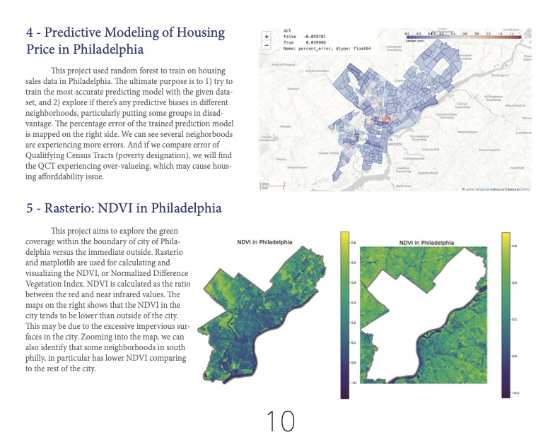

The Quarto page (can be accessed on the right side) includes 7 in-class python projects, including 6 assignments and a final project.
The assignment projects covers a wide range of projects, including processing and visualization of geospatial and numeric data, webscrapping,
sentiment analysis, and machine learning. The final project, named "All About Arts" use the skills developed through assignments to assess the public access
to art institutions in New York City and London, as well as utilizing the MET and MoMA's onlien database for brief digital archive analysis.
